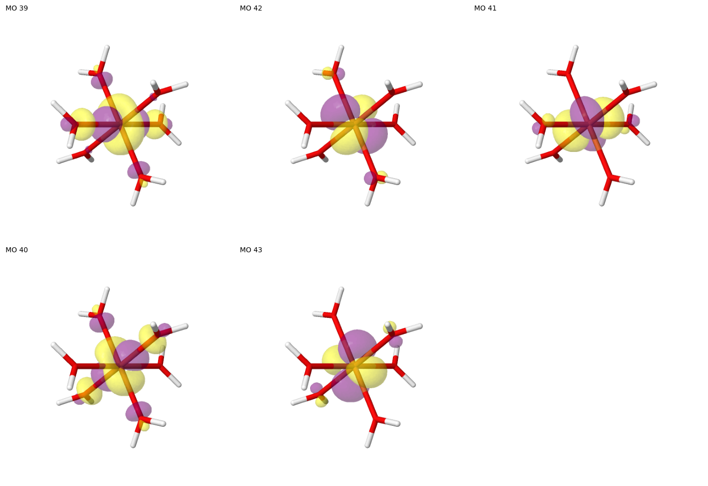
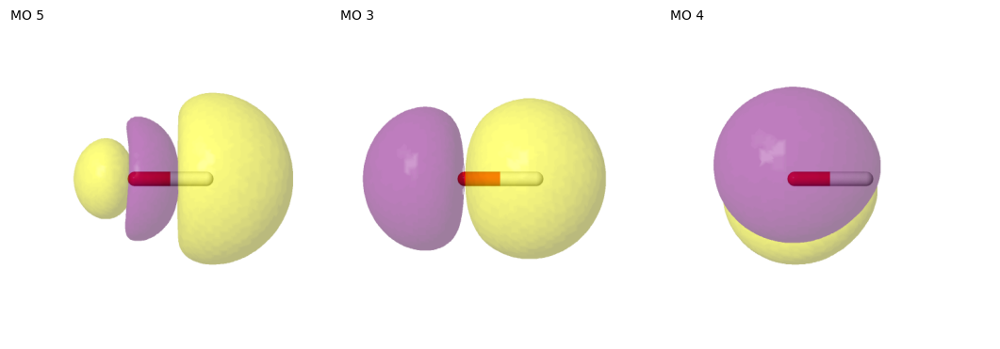

Search with fallback mode
Active space selection with the ASF package is largely based on pair information criteria derived from the two-electron cumulant, augmented with single-orbital entropies. We designed procedures to select active spaces that are likely to converge in CASSCF calculations. To fulfill the latter criterion, it helps to omit weakly entangled orbitals from the active space. For some systems, however, correlation of relevant orbitals may be relatively weak; in particular, if those systems lack any pronounced static correlation. The following examples show how to obtain a reasonable active space by controlling and relaxing the search criteria via fallback modes.
The example covers: - searching an active space using find_one_entropy with varying fallback modes - searching active spaces using find_many with a fallback option - visualizing results with Jmol
Before turning to the example calculations, we briefly review the selection process of find_many, find_one_sized, and find_one_entropy. The ASF classes are able to generate a large set of candidate spaces (“unfiltered spaces”); only a subset of those will converge at all in a CASSCF calculation, and only a tiny subset will converge to a solution that is consistent with the guess (which is the desirable outcome). Procedures in the ASF aim to identify such a tiny subset. Search
functions, such as find_one_entropy or find_many, first narrow down the large unfiltered set to a collection of reasonable spaces by applying the following three criteria:
Removing any orbital from the active space lowers the amount of correlation in the active space more strongly than adding any orbital to the active space increases it. This is quantified by the smallest decrement
min_decrementexceeding the largest incrementmax_increment(to within a comparison tolerance).It is not possible to increase the amount of correlation contained in an active space by swapping out an active orbital for an inactive orbital (while keeping the number of active orbitals and electrons constant). Numerically, for each group of active spaces (N, M) with the same number of active orbitals and active electrons, a space from that group is kept if it includes the orbitals with the largest node weight to within a comparison tolerance. The considered node weight may be the minimal single-orbital entropy, the minimal edge sum (minimal sum of all edge values associated with an orbital node), or no node weight (
"none") which is equivalent of disabling this criterion.Too weakly correlated orbitals are omitted from the active space. The associated requirement is that the minimal entropy of any orbital must be above the given minimal entropy threshold (default: 0.07).
We make a further distinction between orbitals that are members of a minimal space always needed to accommodate unpaired electrons, and further (“exchangeable”) MOs. The reason for this is that orbitals needed to host unpaired electrons may be weakly correlated in some systems, but they always have to be included in the active space; and despite being weakly correlated, they are unable to rotate out of the active space in CASSCF calculations as a consequence of hosting the spin density. Generally, the selection criteria set out above are applied to “exchangeable” MOs that are not needed to accomodate unpaired electrons. Minimal space MOs that are identified as hosting the unpaired electrons are exempt. An exception from this exception is the minimal space itself, which has a dedicated flag and contains the actual values, not the values determined for the exchangeable MOs only.
The find_one variants then apply additional criteria to select a single space, while find_many returns the collection of reasonable spaces directly.
Example 1: Hexaaqua-Iron(III) cation
The first example is the hexaaqua-iron(III) complex in its sextet ground state using a molecular structure taken from Phys. Chem. Chem. Phys. 21, 4854-4870, (2019) [doi:10.1039/C9CP00105K], which was optimized in the gas phase for the sextet ground state at the BP86-D3/def2-TZVP level of theory. The complex has ideal octahedral symmetry with all Fe-O distances measuring 2.06 Å.
[1]:
# Suppress PySCF warning...
import pyscf
pyscf.__config__.B3LYP_WITH_VWN5 = False
[2]:
from asf.asfbase import print_mo_table
from asf.filters import ActiveSpaceSelectionError
from asf.scf import stable_scf
from asf.preselection import MP2PairinfoPreselection, MP2NatorbPreselection
from asf.utility import pictures_Jmol, show_mos_grid
from asf import ASFDMRG, ASFCI
from pathlib import Path
from pprint import pprint
from pyscf.gto import M
1.1. Setting up the molecular system
The ASF package assumes that molecular systems are represented as PySCF Mole objects. The first step is therefore to initialize the hexaaqua-iron(III) complex as follows:
[3]:
mol = M(
atom="""
Fe -0.0000000 0.0000000 0.0000000
O 0.0000000 2.0622910 0.0000000
H 0.7919274 2.6471973 0.0000000
H -0.7919274 2.6471973 0.0000000
O -0.0000000 0.0000000 2.0622910
H -0.0000000 0.7919274 2.6471973
H 0.0000000 -0.7919274 2.6471973
O 2.0622910 -0.0000000 -0.0000000
H 2.6471973 -0.0000000 0.7919274
H 2.6471973 -0.0000000 -0.7919274
O -0.0000000 -2.0622910 0.0000000
H -0.7919274 -2.6471973 -0.0000000
H 0.7919274 -2.6471973 -0.0000000
O 0.0000000 0.0000000 -2.0622910
H 0.0000000 -0.7919274 -2.6471973
H -0.0000000 0.7919274 -2.6471973
O -2.0622910 0.0000000 0.0000000
H -2.6471973 0.0000000 -0.7919274
H -2.6471973 0.0000000 0.7919274
""",
charge=3,
spin=5,
basis="def2-svp",
)
1.2. Initializing the ASF class
Next, we prepare an ASF class instance that will later compute the single-orbital entropies and pair information based on an approximate DMRG-CI calculation. We start with an unrestricted Hartree-Fock calculation using the convenient stable_scf function from the asf.scf module. Using the from_preselection method, the selection of the initial space and instantiation of the ASFDMRG is carried out with one function call.
[4]:
mf = stable_scf(mol)
sf = ASFDMRG.from_preselection(MP2NatorbPreselection(mf), maxM=150)
print(f"-> Selected an initial space of {sf.nel} electrons and {sf.norb} orbitals.")
sf.calculate()
-> Initiating a UHF calculation.
converged SCF energy = -1717.17935339353 <S^2> = 8.7538698 2S+1 = 6.0012898
<class 'pyscf.scf.uhf.UHF'> wavefunction is stable in the internal stability analysis
-> The calculated SCF solution is converged and stable.
-> Selected an initial space of 29 electrons and 30 orbitals.
CASCI E = -1717.36180694799 E(CI) = -138.313628647858 S^2 = 8.7500000
Inspecting the single-orbital densities (w) and single-orbital entropy (S) for the initial space, we notice that all orbitals display very low entropies. For comparison, the default entropy threshold applied by find_one_entropy is ca. 0.139 and the minimal threshold applied to select the reasonable set of spaces is 0.07. We can therefore expect that at least one of the three criteria mentioned above is not met and the collection of reasonable spaces is empty.
[5]:
print_mo_table(orbital_densities=sf.one_orbital_density(), mo_list=sf.mo_list.tolist(), selections={"initial": sf.mo_list})
MO w( ) w(↑) w(↓) w(⇅) S sel
27 0.000 0.004 0.004 0.992 0.053 initial
28 0.001 0.005 0.005 0.990 0.066 initial
29 0.001 0.004 0.004 0.991 0.061 initial
30 0.001 0.005 0.004 0.990 0.065 initial
31 0.002 0.004 0.004 0.990 0.065 initial
32 0.002 0.004 0.004 0.990 0.064 initial
33 0.002 0.004 0.004 0.989 0.070 initial
34 0.001 0.005 0.005 0.989 0.073 initial
35 0.001 0.004 0.004 0.990 0.063 initial
36 0.001 0.005 0.004 0.990 0.065 initial
37 0.001 0.005 0.005 0.989 0.069 initial
38 0.001 0.004 0.004 0.991 0.060 initial
39 0.001 0.998 0.000 0.001 0.015 initial
40 0.001 0.998 0.000 0.001 0.016 initial
41 0.000 1.000 0.000 0.000 0.001 initial
42 0.000 1.000 0.000 0.000 0.001 initial
43 0.000 1.000 0.000 0.000 0.001 initial
44 0.988 0.006 0.005 0.001 0.078 initial
45 0.991 0.004 0.004 0.001 0.061 initial
46 0.991 0.004 0.004 0.001 0.059 initial
47 0.991 0.004 0.004 0.001 0.061 initial
48 0.990 0.004 0.004 0.002 0.068 initial
49 0.990 0.004 0.004 0.002 0.064 initial
50 0.990 0.004 0.004 0.002 0.064 initial
51 0.991 0.004 0.004 0.001 0.062 initial
52 0.991 0.004 0.004 0.001 0.060 initial
53 0.990 0.004 0.004 0.001 0.063 initial
54 0.992 0.004 0.004 0.001 0.054 initial
55 0.992 0.004 0.004 0.001 0.055 initial
56 0.996 0.002 0.002 0.000 0.030 initial
1.3. Searching for multiple spaces
Following the explanations outlined above, it is unsurprising if find_many does not suggest any non-trivial active space. Indeed, this is the case if we strictly apply the three criteria mentioned above without exemption for the minimal space, i.e. with keep_minimal=False.
[6]:
spaces_strict = sf.find_many(keep_minimal=False)
print(f"Active spaces matching criteria 1) - 3): {spaces_strict}")
Active spaces matching criteria 1) - 3): {}
Running find_many with the default settings, i.e. keep_minimal=True, the minimal space is exempt from the criteria 1) to 3) outlined previously. For open-shell systems with N unpaired electrons it is always possible to construct an (N, N) minimal space, containing N electrons in N orbitals: using it to perform a CASSCF calculation is, effectively, equivalent with restricted open-shell Hartree-Fock (ROHF). Therefore, the default behavior of find_many is to preserve this (N,
N) space.
[7]:
spaces_minimal = sf.find_many()
print(f"Active spaces matching criteria 1) - 3) including minimal space:")
pprint(spaces_minimal)
Active spaces matching criteria 1) - 3) including minimal space:
{(5, 5): [MOListInfo(mo_list=[39, 40, 41, 42, 43],
nel=5,
minimal=True,
pairinfo_sum=-9.565507858210262e-05,
max_increment=0.000494492867929512,
min_decrement=-0.0002840592442738441,
min_entropy=0.0007308660074997644,
min_edge_sum=4.5000830318023385e-05)]}
1.4. Searching for a single active space
The method find_one_entropy invokes the same procedure to extract sensible spaces from the initial unfiltered collection as find_many, so no active space is suggested if the search criteria are applied in a strict manner. To obtain a reasonable alternative in such cases, find_one_entropy provides several fallback modes with slightly altered search parameters. These fallback criteria follow a hierarchy outlined below:
"strict"applies the original search criteria: among the set of reasonable spaces containing only MOs with entropies above a threshold (0.139 by default), it selects the one that maximizes the pair information sum."below_threshold"chooses among spaces that were discarded with the strict entropy threshold. Among the collection of discarded but otherwise sensible spaces, it identifies the one where the lowest entropy of any MO is as large as possible. If multiple spaces have identical values of the minimal entropy, it selects the one among them that maximizes the pair information sum."minimal"always includes the minimal space in set of reasonable spaces; criterion"below_threshold"excludes the minimal space, unless it satisfies the criteria for filtering of sensible spaces."unfiltered"extends the search to the large set of unfiltered spaces if the selection attempt with the reasonable spaces was unsuccessful. Similarly to options 1)-3) in this enumeration, it will first try to select an unfiltered space with a minimal entropy above the given threshold that maximizes the pair information sum and if it fails, then attempts to find the unfiltered space with the highest minimal entropy below the entropy threshold.
The fallback_mode argument determines to which point this sequence should be executed if the “strict” search does not yield a result. By default it is set to “minimal”, i.e. at most the “minimal” fallback search is run before an exception is thrown. "unfiltered" is an expert option that is disabled by default, as the active spaces returned thereby are not at all likely to lead to converging CASSCF calculations.
[8]:
FALLBACK_MODE = "strict"
try:
selected = sf.find_one_entropy(fallback_mode=FALLBACK_MODE)
print(selected)
except ActiveSpaceSelectionError:
print(f"-> Could not determine active space with {FALLBACK_MODE=}.")
-> Could not determine active space with FALLBACK_MODE='strict'.
Since the collection of reasonable spaces is empty, also the subsequent fallback search below the entropy threshold does not yield a result.
[9]:
FALLBACK_MODE = "below_threshold"
try:
selected = sf.find_one_entropy(fallback_mode=FALLBACK_MODE)
print(selected)
except ActiveSpaceSelectionError:
print(f"-> Could not determine active space with {FALLBACK_MODE=}.")
-> Could not determine active space with FALLBACK_MODE='below_threshold'.
Once the “minimal” fallback mode is activated, the set of reasonable spaces has one member, the minimal space, which is returned as the result.
[10]:
FALLBACK_MODE = "minimal"
try:
selected = sf.find_one_entropy(fallback_mode=FALLBACK_MODE)
print(selected)
except ActiveSpaceSelectionError:
print(f"-> Could not determine active space with {FALLBACK_MODE=}.")
ActiveSpace: 5 electrons in 5 orbitals
active MO indices: [39, 40, 41, 42, 43]
1.5. Visualizing the results
To visualize the suggested (5, 5) space, we generate molecular orbital images with Jmol via the pictures_Jmol utility function.
[11]:
# If plots have been generated in a previous run of the Notebook, they will be reused here.
# Set redo_plots = True, if new orbital images should be created regardless of existing files.
redo_plots = True
def mo_images(name_glob: str = "mo_*.png") -> list[Path]:
"""Return the list of all MO images in this directory."""
return list(Path.cwd().glob(name_glob))
if not mo_images() or redo_plots:
pictures_Jmol(
mol=mol,
mo_coeff=sf.mo_coeff,
mo_list=selected.mo_list,
rotate=(60, 45, 0),
mo_index_title=" ",
zoom=100,
)
show_mos_grid(images=mo_images(), mo_list=selected.mo_list, columns=3)

Example 2: Hydroxyl radical
The hydroxyl radical is another case where the strict application entropy-based search criteria does not lead to an active space suggestion. It serves as an example why the ASF applies not one but several fallback modes for find_one_entropy.
2.1. Setting up the molecular system
[12]:
mol2 = M(
atom="""
O 0.0000000 0.0000000 0.0000000
H 0.0000000 0.0000000 0.9700000
""",
charge=0,
spin=1,
basis="def2-svp",
)
2.2. Initializing the ASF class
[13]:
mf2 = stable_scf(mol2)
sf2 = ASFCI.from_preselection(MP2PairinfoPreselection(mf2))
print(f"Selected an initial space of {sf2.nel} electrons and {sf2.norb} orbitals.")
sf2.calculate()
-> Initiating a UHF calculation.
converged SCF energy = -75.3251000879719 <S^2> = 0.75481361 2S+1 = 2.0048078
<class 'pyscf.scf.uhf.UHF'> wavefunction is stable in the internal stability analysis
-> The calculated SCF solution is converged and stable.
Selected an initial space of 7 electrons and 8 orbitals.
CASCI E = -75.4134819010618 E(CI) = -19.6073402951632 S^2 = 0.7500000
From the single-orbital densities and single-orbital entropy associated with the initial space, we notice that no entropy is above the default threshold (0.139) but most entropies are above the minimal entropy threshold used to select the sensible spaces.
[14]:
print_mo_table(orbital_densities=sf2.one_orbital_density(), mo_list=sf2.mo_list.tolist(), selections={"initial": sf2.mo_list})
MO w( ) w(↑) w(↓) w(⇅) S sel
1 0.002 0.005 0.003 0.990 0.065 initial
2 0.004 0.006 0.005 0.986 0.089 initial
3 0.008 0.006 0.005 0.982 0.111 initial
4 0.006 0.992 0.001 0.001 0.054 initial
5 0.982 0.006 0.005 0.008 0.111 initial
6 0.986 0.005 0.005 0.003 0.087 initial
7 0.991 0.004 0.004 0.001 0.061 initial
8 0.993 0.006 0.000 0.000 0.044 initial
2.3. Searching for a single active space
As expected, applying the search criteria without a fallback does not yield a suggestion for an active space.
[15]:
FALLBACK_MODE = "strict"
try:
selected2 = sf2.find_one_entropy(fallback_mode=FALLBACK_MODE)
print(selected2)
except ActiveSpaceSelectionError:
print(f" - Could not determine active space with {FALLBACK_MODE=}")
- Could not determine active space with FALLBACK_MODE='strict'
With the subsequent fallback mode, "below_threshold", there are two possible spaces to choose from (note that find_many is called here to show the sensible spaces below the entropy threshold):
[16]:
pprint(sf2.find_many(keep_minimal=False))
{(3, 3): [MOListInfo(mo_list=[3, 4, 5],
nel=3,
minimal=False,
pairinfo_sum=0.049605184211575885,
max_increment=0.01161009638629941,
min_decrement=0.05675525149821308,
min_entropy=0.11114300331610714,
min_edge_sum=0.02515539188676561)],
(5, 5): [MOListInfo(mo_list=[2, 3, 4, 5, 6],
nel=5,
minimal=False,
pairinfo_sum=0.08238531870553104,
max_increment=0.011971120285745818,
min_decrement=0.033731576276165326,
min_entropy=0.08664494471001857,
min_edge_sum=0.016453630596191884)]}
Since this fallback option selects a space below the threshold where the lowest entropy of any MO is largest (as opposed to maximizing the pair information above the threshold), we obtain the (3, 3) space.
[17]:
FALLBACK_MODE = "below_threshold"
try:
selected2 = sf2.find_one_entropy(fallback_mode=FALLBACK_MODE)
print(selected2)
except ActiveSpaceSelectionError:
print(f" - Could not determine active space with {FALLBACK_MODE=}")
ActiveSpace: 3 electrons in 3 orbitals
active MO indices: [3, 4, 5]
2.4. Visualizing the results
[18]:
redo_plots = True
if not mo_images("oh_mo_*.png") or redo_plots:
pictures_Jmol(
mol=mol2,
mo_coeff=sf2.mo_coeff,
mo_list=selected2.mo_list,
rotate=(90, 45, 90),
name="oh_mo",
mo_index_title=" ",
zoom=100,
)
show_mos_grid(images=mo_images("oh_mo_*.png"), mo_list=selected2.mo_list, columns=4, image_regex=r"oh_mo_(\d+)")
